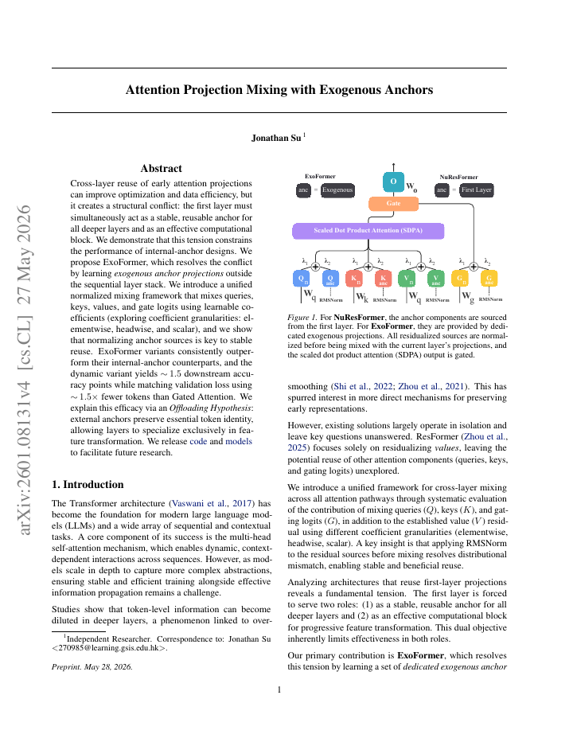
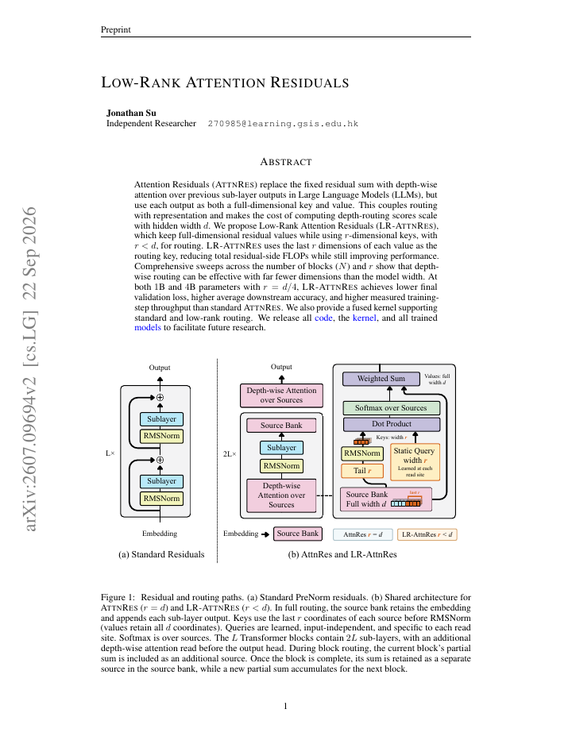

 Attention Projection Mixing with Exogenous Anchors Jonathan Su · ICML 2026 · Main Track Paper GitHub LLM generated explanations try the idea ↗ Using GPT-6 Astra
 Low-Rank Attention Residuals Jonathan Su · Submitted to ICLR 2027 Paper GitHub LLM generated explanations try the idea ↗ Using GPT-6 Astra